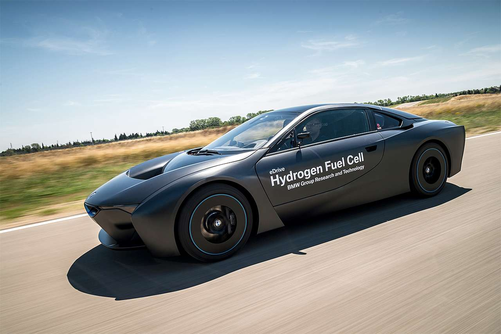

WHO WE ARE

The special fascination of the BMW Group not only lies in its products and technology, but also in the company’s history, written by inventors, pioneers and brilliant designers. Today, the BMW Group, with its 31 production and assembly facilities in 14 countries as well as a global sales network, is the world’s leading manufacturer of premium automobiles and motorcycles, and provider of premium financial and mobility services.
The BMW Group company profile.
The special fascination of the BMW Group not only lies in its products and technology, but also in the company’s history, written by inventors, pioneers and brilliant designers. Today, the BMW Group, with its 31 production and assembly facilities in 14 countries as well as a global sales network, is the world’s leading manufacturer of premium automobiles and motorcycles, and provider of premium financial and mobility services.
SURROUND VIEW CAMERA SYSTEM.
Get the best angle, from different angles. Stay fully aware of your surroundings with cameras built into the front, rear, and sides of the vehicle. This technology offers you a 360-degree view of your surroundings, including video images of approaching traffic shown directly on the Control Display. Not the best at parallel parking? Never fear. The Surround View Camera System gives you interactive track lines to follow so you can easily steer your way into the tightest of spots. Now blind spots will truly be something of the past.

Sustainability: the guiding principle for all our actions.
Long-term thinking and responsible action are the basis of economic success. Ecological and social sustainability, comprehensive product responsibility and a clear commitment to conserving resources are therefore an integral part of our strategy. With Efficient Dynamics, the BMW Group consistently implements the principle of sustainable mobility and is steadily reducing its vehicles’ fuel consumption and emissions.